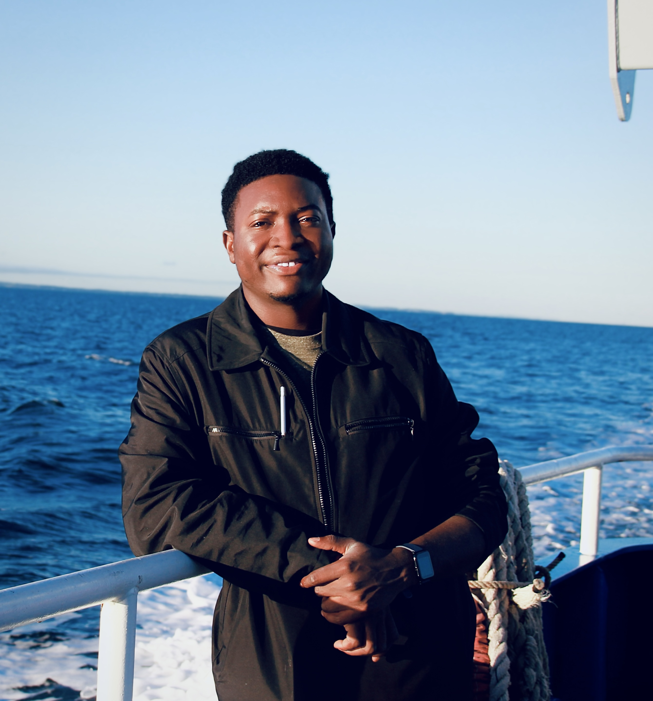
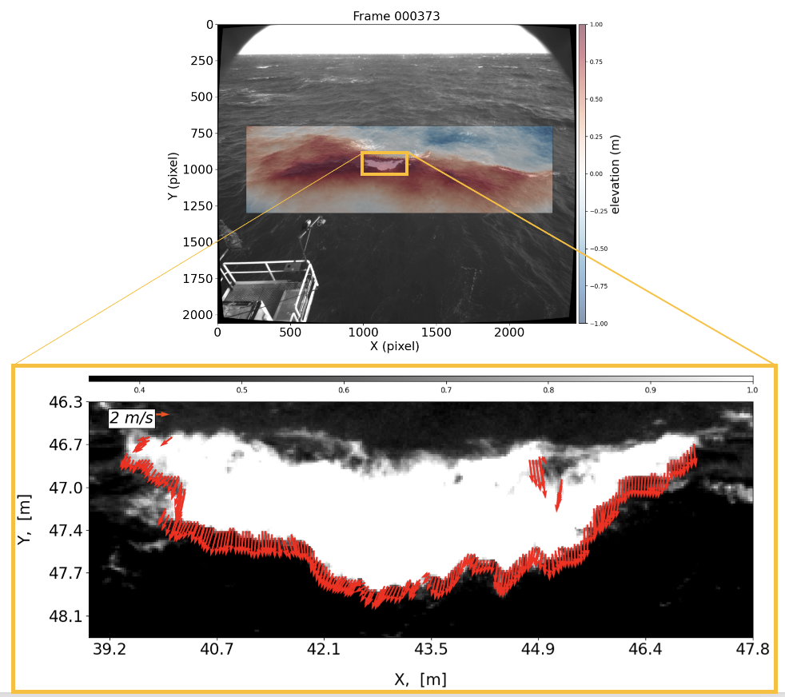

Bernard Akaawase
Ph.D. Candidate of Physical Oceanography, University of Connecticut

Research Interests:
- Air–Sea Interactions
- Ocean Engineering
- Wave Surface Waves
- Remote Sensing & Imaging
- AI/ML for Oceanography
I hold a bachelor’s degree in Marine Engineering and am currently a doctoral researcher in Physical Oceanography at the University of Connecticut, working under the supervision of Prof. Leonel Romero in the Air–Sea Interaction Laboratory.
My research focuses on wave breaking and ocean-surface wave dynamics, with emphasis on wave-breaking directionality, 3D stereo reconstruction using visible and infrared imaging, and phase-resolved analysis of the sea surface. I develop observational and computational tools to quantify energy dissipation and improve physics-based models used in predicting air–sea fluxes, marine weather, and environmental conditions.
My broader interests include ocean observing systems, oceanography, remote sensing techniques, machine learning for environmental inference, and advancing directional parameterizations in spectral wave models. I am currently looking for postdoctoral research opportunities beginning Fall 2026 and long-term roles in research institutions, government labs, or ocean technology groups.
Recent Projects
-
Wave-Breaking Kinematics

Co-developed software and hardware for stereo IR and visible imaging at the ASIT MVCO tower. The system enables broadband, field-scale measurement of breaking wave kinematics and surface turbulence.
-
Wave Flume
Co-designed and co-built a 1.2-meter demonstration wave tank with a controllable plunger for laboratory experiments on wave dissipation, turbulence, and wave–structure interaction. This Project was done in collaboration with Prof. Romero's research group (Shawn, Paban, Hiryu). -
Portable Airborne Mapping System
Developed a compact aerial payload for high-resolution visible imaging and Lidar measurements.
News
| Sep 17, 2024 |

New Fellowship for Marine Science Outreach
Awarded a fellowship supporting K–12 coastal outreach. Read more. |
|---|---|
| Jun 12, 2023 |

Drone Technology to Study Waves
Featured in UConn Today for drone-based surface wave sensing. |
| Apr 22, 2023 | Presented at WISE 2023 on directional wave breaking kinematics. |
| May 9, 2022 | Received a pre-doctoral research award supporting surface wave kinematics research. |